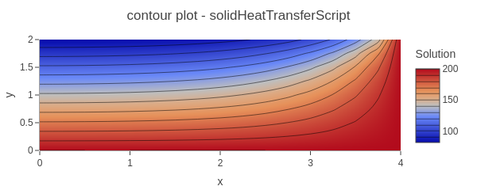
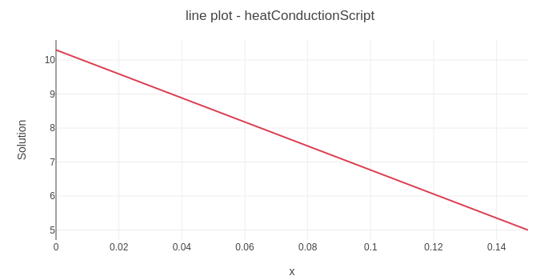

Advection–diffusion with Gaussian source tutorial
Heat conduction in a 2D fin tutorial
Heat conduction through a wall tutorial

Solidification front propagation in a 2D domain tutorial
FEAScript is a lightweight, open-source finite element simulation library developed in
JavaScript.
It empowers users to perform simulations for physics and engineering problems in both
browser-based and server-side environments. FEAScript serves as an excellent tool for building
interactive web applications and facilitates hands-on learning of computational mechanics.
üéØ
Our goal is to democratize finite element analysis by making simulation capabilities accessible to
everyone, everywhere.
There are two ways to perform simulations with FEAScript:
](https://github.com/sponsors/feascript)
Quick Start: To use FEAScript in your HTML, include it from our hosted ESM build (i.e.,
import { FEAScriptModel } from "https://core.feascript.com/dist/feascript.esm.js";) or
download it from GitHub → add a
canvas (e.g., <div id="resultsCanvas"></div>) → add a mesh file (e.g.,
your.msh from
Gmsh ) or use FEAScript mesh generation tools → run the simulation. Here is a simple example (see
tutorials for more details):
) or use FEAScript mesh generation tools → run the simulation. Here is a simple example (see
tutorials for more details):
<body>
<!-- ...body region... -->
<script type="module">
// Import FEAScript library
import { FEAScriptModel, importGmshQuadTri, plotSolution } from "https://core.feascript.com/dist/feascript.esm.js";
window.addEventListener("DOMContentLoaded", async () => {
// Load and parse Gmsh mesh
const meshContent = await (await fetch("path/to/your.msh")).text();
const meshFile = new File([meshContent], "your.msh");
const parsedMesh = await importGmshQuadTri(meshFile);
// Create and configure model
const model = new FEAScriptModel();
model.setSolverConfig("solverType"); // e.g., "heatConductionScript"
model.setMeshConfig({parsedMesh, meshDimension: "2D", elementOrder: "linear"});
// Apply boundary conditions (Gmsh physical group tags)
model.addBoundaryCondition("boundaryIndex", ["conditionType", /* parameters */]);
// Solve
const { solutionVector, nodesCoordinates } = model.solve();
// Plot results
plotSolution(solutionVector, nodesCoordinates, model.solverConfig, model.meshConfig.meshDimension, "contour", "resultsCanvas", "unstructured");
});
</script>
<!-- ...rest of body region... -->
</body>
The above code is an illustrative example of running FEAScript. Adapt paths, solver types, and boundary conditions to your specific problem.
üöß FEAScript is currently under heavy development with new features being added regularly. Interested in contributing? Check out our contribution guidelines to get started.
The following list highlights key FEAScript features:
.msh file format)
Below you can explore tutorials that provide a step-by-step introduction to FEAScript. These tutorials
show you how to use FEAScript API directly, integrating finite element simulations into your own
websites and applications, or how to use it in interactive JavaScript playgrounds such as
CodePen and
Scribbler
and
Scribbler . Each tutorial include different variations that demonstrate the same physical problem under different
configurations, ranging from simple examples to advanced setups using external meshes or multiple
threads.
. Each tutorial include different variations that demonstrate the same physical problem under different
configurations, ranging from simple examples to advanced setups using external meshes or multiple
threads.
Please report any feedback on the tutorials above to the GitHub Discussions or Issues.
The documentation for FEAScript is currently under development. In the meantime, for information on the numerical methods used in FEAScript and other technical resources, please visit the FEAScript blog.
The core library of FEAScript is distributed under the terms of the MIT license. This website is licensed under the Creative Commons Attribution 4.0 License.